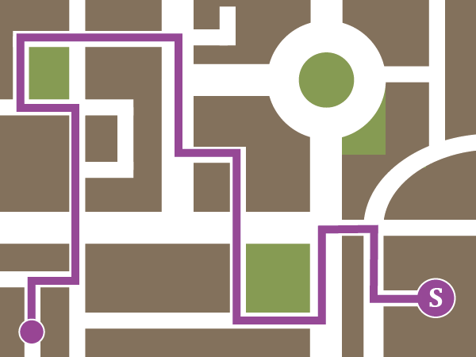
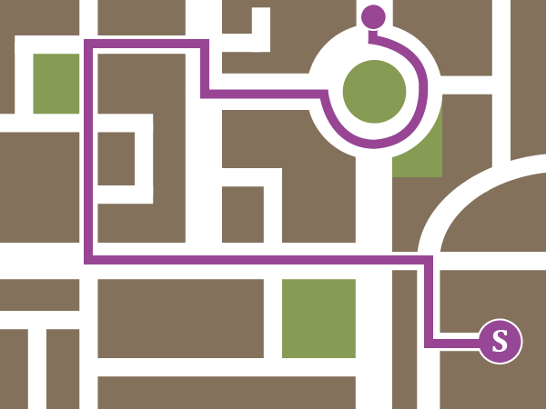
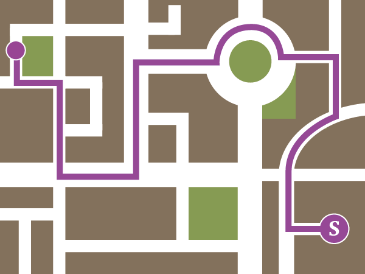
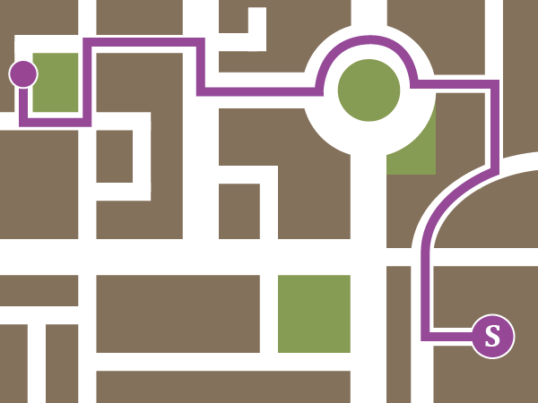
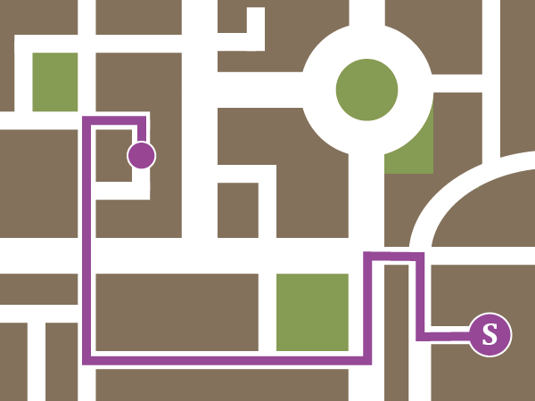
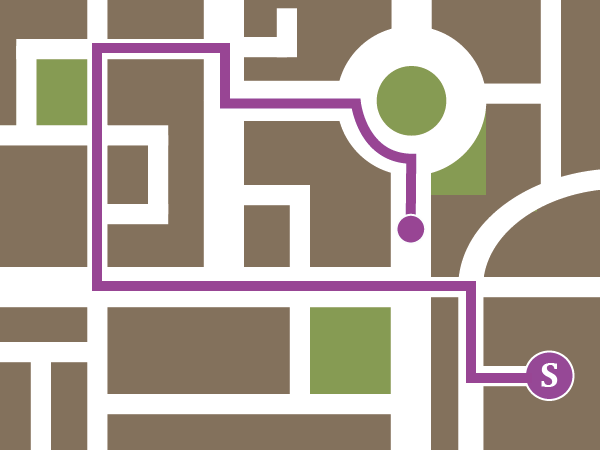

Look at the descriptions below. Each one of them describes a part of a road network. Decide which word fits the best.
| A place, where multiple roads come together, usually in a T shape. | |
| A signal device that is used to coordinate the flow of traffic. | |
| Big empty space, where people can stop and leave their vehicles. | |
| A time of day, when a lot of people leave their homes or work all at once, causing heavy traffic on the streets. | |
| A marked part of a road, where people are allowed to traverse the street. | |
| A part of a street, where only people are allowed to go. | |
| A very wide street, usually with a lot of pedestrian space and shops by the sides. | |
| You have to pay to be able to use this road. | |
| A road crossing, that has several height levels. | |
| A part of a road that diverges to the left. |
You are going to hear four recordings. Each of the recordings describes a way home of one of the students. The students depart from school, which is marked as S on the map. Assign each of the maps to the correct student.
| A  | B  | C  |
| D  | E  | F  |
|
Chris |
Ada |
|
Leon |
Jill |